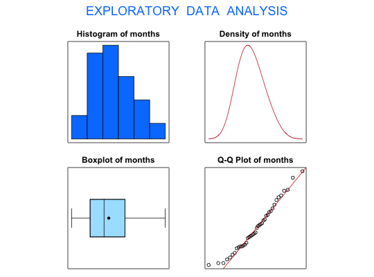

Data for Exercise 1.123
A data frame with 41 observations on the following variable.
Kitchens, L. J. (2003) Basic Statistics and Data Analysis. Duxbury
str(Sentence)#> 'data.frame': 41 obs. of 1 variable: #> $ months: int 117 188 172 145 173 159 123 136 115 190 ... #>attach(Sentence) stem(months)#> #> The decimal point is 1 digit(s) to the right of the | #> #> 10 | 577 #> 12 | 13683455679 #> 14 | 45678905789 #> 16 | 03489236 #> 18 | 058056 #> 20 | 96 #> #>EDA(months)#> [1] "months" #>#> Size (n) Missing Minimum 1st Qu Mean Median TrMean 3rd Qu #> 41.000 0.000 115.000 135.000 155.073 150.000 154.081 172.500 #> Max. Stdev. Var. SE Mean I.Q.R. Range Kurtosis Skewness #> 216.000 25.863 668.870 4.039 37.500 101.000 -0.632 0.441 #> SW p-val #> 0.286 #>ll <- mean(months)-2*sd(months) ul <- mean(months)+2*sd(months) limits <- c(ll,ul) limits#> [1] 103.3481 206.7982 #>detach(Sentence)